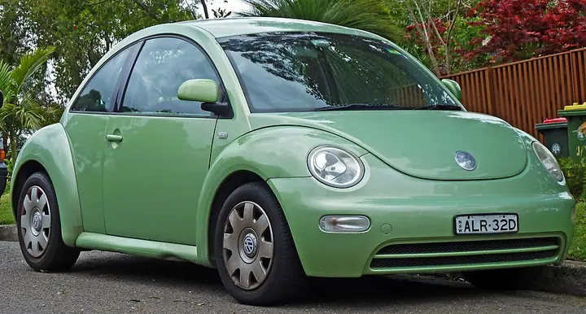

Volkswagen New Beetle
1997–2011
Abstract
The Volkswagen New Beetle is a compact car (C), built October 1997 – July 2011 in Germany: Wolfsburg (Wolfsburg Volkswagen plant: 1997–1999), Mexico: Puebla (Volkswagen de México S.A. de C.V.: 1999–2011), Vietnam: Hai Phong (CKD by World Auto: 2011–2019). Body styles: 3-door hatchback, 2-door convertible. Layout: Front engine, front-wheel drive, 4motion all-wheel drive (RSi). Designed by J Mays (1993, 1995), Freeman Thomas (1993, 1995), Peter Schreyer (1993).

_2.0_coupe_(2010-10-01)_01.jpg){kind=link}
1Specifications
| Production | October 1997 – July 2011 |
|---|---|
| Model years | 1998–2010 |
| Assembly | Germany: Wolfsburg (Wolfsburg Volkswagen plant: 1997–1999)Mexico: Puebla (Volkswagen de México S.A. de C.V.: 1999–2011)Vietnam: Hai Phong (CKD by World Auto: 2011–2019) |
| Designer | J Mays (1993, 1995)Freeman Thomas (1993, 1995)Peter Schreyer (1993) |
| Class | Compact car (C) |
| Body style | 3-door hatchback2-door convertible |
| Layout | Front engine, front-wheel drive, 4motion all-wheel drive (RSi) |
| Platform | Volkswagen Group A4 (PQ34) platform |
| Engine | Petrol engines:1.4 L I4 16 valve1.6 L I41.8 L I4 Turbocharged2.0 L I42.3 L VR5 20 valve2.5 L I5 20 valve3.2 L VR6 24 valve (RSI)Diesel engine:1.9 L I4 TDI |
| Transmission | 5-speed manual6-speed manual4-speed automatic (01M)6-speed automatic tiptronic (09G)6-speed DSG dual-clutch automatic |
| Wheelbase | 2515 mm |
| Length | 4129 mm |
| Width | 1721 mm |
| Height | 59.5 in (1998–2000)1498 mm (hatch 2003–2011)59.1 in (convertible) |
| Also called | Volkswagen Beetle (Mexico)Volkswagen Bjalla (Iceland) |
| Related | Audi A3 Mk1Audi TT Mk1SEAT León Mk1SEAT Toledo Mk2Škoda Octavia Mk1Volkswagen Golf Mk4Volkswagen Jetta/Bora |
| Predecessor | Volkswagen Beetle |
| Successor | Volkswagen Beetle (A5) |
2Versions
- Beetle RSi (2001–2003)
- Ragster concept (2005)
- Anniversary Edition (2008)
- Blush (2009)
- Final edition (2010)
- BlackOrange Edition (2010)